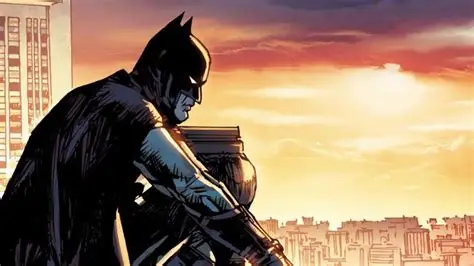

A Noite que Mudou Gotham

Após presenciarem uma tragédia no Beco do Crime, o jovem herdeiro Bruce Wayne jurou dedicar sua vida e fortuna a expurgar a corrupção e a violência que assolavam Gotham City.
"Os criminosos são covardes e supersticiosos. Meu disfarce deve infundir terror em seus corações. Devo me tornar uma criatura da noite."
O Juramento e o Treinamento
Viajando pelo mundo para aprender artes marciais, criminologia e ciência forense, Bruce retornou para Gotham pronto para assumir o manto do Cavaleiro das Trevas.
Dados Gerais do Vigilante
- Nome Real: Bruce Wayne
- Base de Operações: Batcaverna (Mansão Wayne, Gotham City)
- Ocupação Pública: Filantropo e CEO das Empresas Wayne
- Principais Habilidades: Intelecto de nível genial, mestre em investigação e combate corpo a corpo